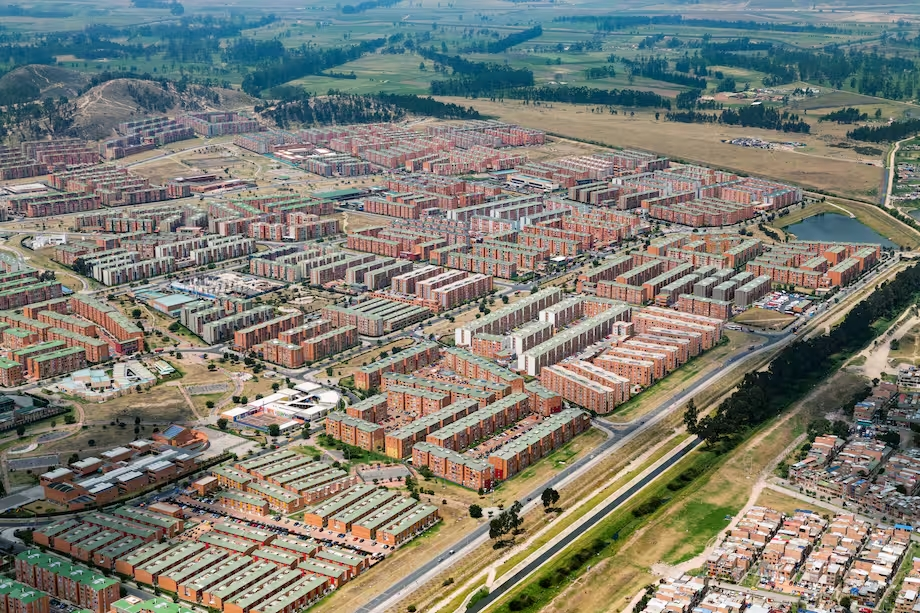

Mala distribución y circulación de busetas durante la hora pico nocturna en el municipio de Soacha, Cundinamarca.
Bienvenido a UrbFlow
UrbFlow es una iniciativa dedicada a visualizar y analizar los desafíos de movilidad urbana que enfrentan miles de ciudadanos diariamente. Nuestra investigación inicial se centra en la problemática del transporte público en Soacha, un área con una dinámica de crecimiento y demanda únicas.
A través de este portal, buscamos no solo exponer datos, sino también crear conciencia sobre la calidad, eficiencia y seguridad del transporte. Creemos que una mejor comprensión de los flujos de movilidad es el primer paso hacia la planificación de soluciones más inteligentes y humanas.
